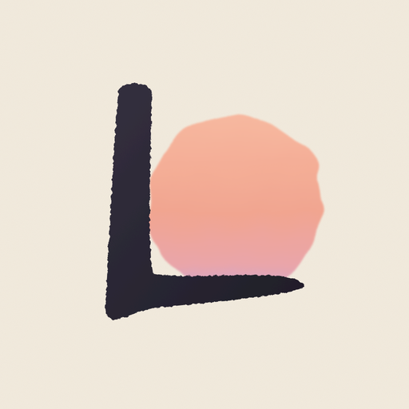

Soporte de Lavis
Cómo se usa cada herramienta, cómo desbloquear Pro, cómo restaurar la compra y cómo cancelar
Actualizado el
Contacto
Escribe a gabrielmicovictoria@gmail.com con el asunto «Lavis». Di en qué aparato lo usas (iPhone, iPad, Mac o Windows) y qué pasa, con los pasos que hiciste. Respondemos por correo.
Cómo se usa cada herramienta
Los nombres de las herramientas son los que salen en la app.
| Herramienta | Cómo se usa |
|---|---|
| Pinceles | Barra «Pinceles». Los 8 pinceles básicos son gratis; los seis pinceles Pro (Pastel, Tiza, Pincel seco, Vapor, Plumilla y Sello) salen con «Pinceles Pro». Sin Pro, se abre la ventana «Ver anuncio y usar Pinceles Pro 20 min» o «Hazte Pro». |
| Capas | Barra «Capas». «Añadir capa» crea una. Con la versión gratis hay hasta 3; para la cuarta, la app pide «Capas sin límite». Cada capa tiene «Mostrar capa» u «Ocultar capa», «Duplicar capa», «Borrar capa», «Fusionar con la de abajo», «Subir capa» y «Bajar capa», «Opacidad» y «Modo de fusión». |
| Modos de fusión | En la capa, «Modo de fusión». «Normal» es gratis. Los demás (Multiplicar, Trama, Superponer, Aclarar, Oscurecer, Sumar, Color y Luminosidad) son Pro. |
| Deshacer y rehacer | Barra «Deshacer» y «Rehacer». Gratis. |
| Color | Barra «Color»: «Disco de color», «Recientes» y «Paleta». Gratis. |
| Cuentagotas | Herramienta «Cuentagotas»: toma el color de cualquier punto del dibujo. Gratis. |
| Transformar | Herramienta «Transformar»: «Escala», «Giro», «Voltear horizontal» y «Voltear vertical». «Aplicar» lo deja como una sola acción para deshacer; «Cancelar» lo descarta. Gratis. |
| Simetría | Barra «Simetría» (Pro): «Apagada», «Espejo vertical», «Espejo horizontal» o «Cuatro cuadrantes». |
| Forma rápida | Herramienta «Forma rápida» (Pro): mantén el lápiz quieto al final del trazo y se convierte en línea, elipse o rectángulo. |
| Guardar y abrir .ora | Barra «Guardar» y «Abrir». El .ora conserva las capas. Gratis. |
| Exportar PNG | Barra «Exportar PNG». Gratis. |
| Exportar PSD | Barra «Exportar PSD» (Pro). Se guarda con sus capas. |
| Ver todo el dibujo | Barra «Ajustar a la pantalla». |
Pro, anuncios y desbloqueo
| Caso | Qué pasa |
|---|---|
| En iPhone y iPad | Al tocar algo Pro sin acceso aparece, por ejemplo, «Ver anuncio y usar Simetría 20 min», con «Hazte Pro» como alternativa. Si ves el anuncio entero, esa herramienta se abre 20 minutos. Con más tiempo, «Añadir 20 min más» (o «Ver anuncio: 20 min más», según la ventana) suma otros 20 minutos a la misma herramienta. Si no hay anuncio en ese momento, la app dice «No hay anuncio ahora. Prueba otra vez en un momento.». |
| En Mac y Windows | Al tocar algo Pro aparece «Desbloquear con el móvil (QR)». El ordenador muestra un código: en Lavis del iPhone, toca «Desbloquear el ordenador» y escanéalo. Ve el anuncio entero con «Ver anuncio» en el móvil; en unos segundos la herramienta se abre en el ordenador. Cada código caduca a los 10 minutos: si caduca, pide «Sacar otro código». |
| Pro | «Hazte Pro» abre la compra de la suscripción: 1,99 € al mes o 14,99 € al año en España. Al instalar tienes todo Pro 7 días sin tarjeta, una sola vez. Al acabar, «Seguir con lo gratis» o «Seguir gratis con anuncios» (en iPhone y iPad). |
Los anuncios solo aparecen en la versión gratis de iPhone y iPad. Mac y Windows no tienen anuncios. Pro quita todos.
Restaurar compras
Si ya compraste Pro y no aparece activo, abre la ventana Pro y toca «Restaurar compras». Usa la misma cuenta con la que compraste: la cuenta de Apple en iPhone, iPad y Mac, o la de Microsoft en Windows.
- Si se recupera: «Compra restaurada: Pro activo.»
- Si no hay suscripción activa: «No hemos encontrado ninguna suscripción activa para restaurar.»
- Si falla la conexión: «No se pudo restaurar. Comprueba la conexión y prueba otra vez.»
Cancelar la suscripción
Pro es una suscripción que se renueva sola, al mismo precio, hasta que la canceles. Cancélala al menos 24 horas antes de que acabe el periodo.
- iPhone, iPad y Mac: en la ventana Pro, «Gestionar suscripción», o en apps.apple.com/account/subscriptions.
- Windows: en account.microsoft.com/services.
Borrar Lavis no cancela la suscripción: se cancela en la tienda.
Tus dibujos
Los dibujos se guardan en tu aparato o donde tú elijas al exportar. Lavis no tiene cuentas ni copia en la nube propia. Antes de desinstalar la app, guarda lo que quieras conservar con «Guardar», «Exportar PNG» o «Exportar PSD» (Pro). Más detalles en la política de privacidad.